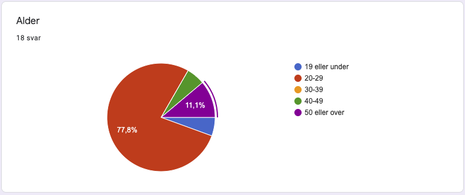
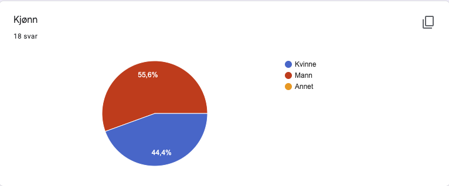
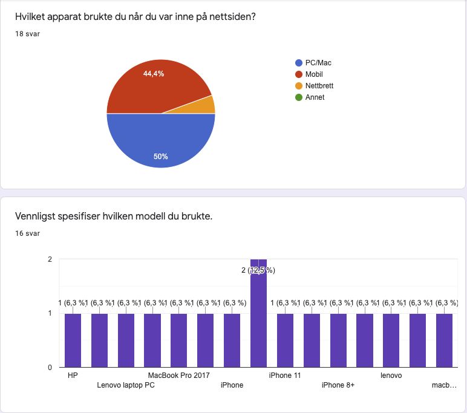
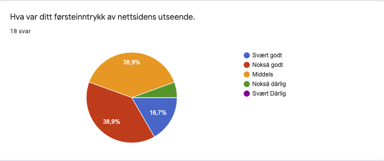

P4: Project Testing
Casper, Egil, Karan, Martin og Mattis
5. November 2020
Administrative Details
Client name: Pål Hembre (owner and maker of the site)
Website name: Team Hembre
Contact person: Pål Hembre
link to site: Trykk her
Testing process
Testing Document:
To gather user rewievs be decided to both ceate a Google form that we could easily distribute to several users and also observe a few user as they tested the site for the first time. The google form was helfull in that it allowed us to gather a large amount of feedback that we then could compare to find the most pressing issues with our website We did this because we believe this was the most efficient way to gather as much feedback as possible. Our thought process in creating the form was to focus on getting the users overall impression of the website without overwhelming them with a overly long questionaire. Therefore we decided to make the form consist of a total of twentyone questions divided in to five main sections. The questions we gave were fairly broad as we believed this gave the user more of a chance to mention any issues they met.
- About you: This section of the form was just created to get a little information about the user. This includes the users age range, the users experience within IT and what device the user was on during testing.
- Aesthetics: This section focused on the users first impretion of the site and what he or she (or other) thought about the layout and color scheme.
- Navigation: This section focused on the users thoughts about navigating through the website an how intuitive it was for new users to move from site to site.
- Layout/placement: This section focused on the placement of the information and if the user felt that the placement of the different information was located nicely on individual sites. This goes hand in hand with the navigation as it gives us an idea if the website is intuitively structured and the information is where the user expects it to be.
Observing a few people using the website for the first time also gave great insight. We tried not to give the user any instructions and only spoke when being directly asked about something. The point of this was to actually see and hear the first impresion of a user and, se how they interacted with, and used, the site.
Tester Audience:
We had a total of 18 answers on our google form which we think is plenty to get a nice grasp of what the average user feel about our website. Here we will go more in depth on who our tester audience consisted of.
Age
The tester audience varied in age from under 19 to over 50, thought the majority of our testers spanned the age 20 to 29. This is expected as our networks mainly consist of users in our own range group, but we could have done more to diversify the tester audience since we expect the average age the target audience to be slightly higher.
Gender
The tester audience did however stike a nice balance between male and female users, with 55,6% of the users being male and the other 44,4% being female. We´re happy with this as it gives a more well rounded data set.
IT-background
The users were in addition split right down the middle when it came to having a background in IT. 50% of the users said no and the other half said yes. There was of course some difference in the IT experience among the users who said yes, but it still gives us an idea that the users viewed the site from different perspectives. While the people with the IT experience may have been judging the site more by it´s underlying code and it´s functionalities, the people without were possible more focused on the aesthetics. This gave us a nice balance and a good variation on our feedback.
Observational tests
Our observetional tests reflected the data obtained by our survey. We mostly observed men and women in our own age range and found the response to be quite similar to what we got from the google form. We were unfortunately not able to observe our client directly, but we did get more extensive feedback from mr. Pål Hembre, as it´s his opinion we value the most.
Testing Platforms:
In our form we included questions about what device and what webbrowser was used during the users testing of the website. This was of course important so that we could discover if the website had any issues with running with certain devices or webbrowsers. Unfortunately, there was not a lot of discrepancy between the answers given, but it still gave us some valuable feedback on the user experience on certain devices.
Webbrowsers used
There were just two webbrowsers used by our users; Google Chrome and Safari, with 55,6% on Chrome and 44,4% on Safari. We would have liked to have the users try some different browsers, but this is to be expected as they are the most comonly used browsers. This just meant that we had to do testing on different browsers ourselves.
Devices used
All together we experienced that a majority of the users that tested the site used pc or mac to check the website, although not by a lot. The survey showed that 50% of users were on mac and pc, 44,4% were using smartphones and one user tested the website on a tablet. Luckily there were not any significant compatability issues with any of the devices that was tested by our users, exept for some minute details that needed small adjustments.
Feedback summary:
The feedback we recieved was really useful as it brought our poor color-choices to light as well as issues with the site that we had not noticed ourselves. While we got a lot of praise for the functionality of the website, we also got a lot of constructive criticism about the aesthetics. Several of the users also felt that the page was a bit "tight" and that it could use some more space, to make it lighter. The pie chart underneath shows what the users firt impressions of the site, and while the overall score seems to be on the positive side, we are not completly satisfied with having 38,9% completly in the middle.
The response to navigation and plcement of information was thankfully a lot more positive, though we do see room for improvement when looking at the summary pie charts here as well.
Our response:
The point of user testing is to find what people like, and dislike, about your website and then change it accordingly. We have made some changes after recieving our feedback and feel like the website has improved imensly thanks to our kind users. Some of the changes we have made because of the feedback is changing colours, making css for all sites more similar, making the pages more spacious and changed the language to English all the way through. We also streamlined the colors so you could sense some coordination between the sites.
While we did not fix every issue made aware to us by the users, we still value the input. And since our client is very real and has genuine need for an operative website, we imagine that we will still work and improve on our project. In the future we would like to make even more changes. For example making a hamburger navigation bar when your using your phone. We would also like to use database to make the contact form actually useful.
Self-reflection:
In reflecting over the entire project process, one quote from George Washington comes to mind:
«Though, in reviewing the incidents of my administration, I am unconscious of intentional error, I am nevertheless too sensible of my defects not to think it probable that I may have committed many errors.».
We have definitely committed many errors, and with the power of hindsight we are more able to see where we went wrong. Although we proudly submit our website, it now becomes all the more apparent what improvements we could make. When it comes to our own defects, we are now more aware of our lack of experience in web design and that we have a lot to learn, especially when it comes to our stylistic choices. However, in reflecting on our own work we have also realized that we have made some solid improvements, as coders and as a group. The great thing about mistakes is that you learn from them, and we will not look back on our previous decisions as lost opportunities, but rather as gained experiences. And these are experiences we will take with into future projects. This reflective part may read as a pandering after school special, but we genuinely feel that this project has made us stronger on both a technical level and a collaborative level.
We would like to close of with a few concrete examples of what we would have done differently, and probably will do differently when working on future projects:
- We could have had some potential users have a look at the planned layout and maybe modified it a little before starting the actual coding process.
- We could have gotten more proffesional shooters to test the sites because they would probably go on the site more and would maybe understand he content better.
- We could have created several examples for ourselves to consider instead of getting our minds set on just one spesific design.